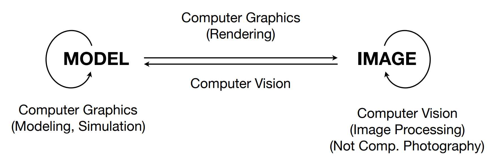
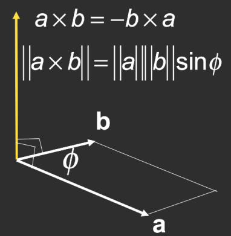

CG-GAMES101-现代计算机图形学入门-闫令琪（1）
目录
资源
Lecture 01 Overview of Computer Graphics
What is Computer Graphics？ 图形学的应用：
Viedo Games 游戏
Movies 电影特效
Animations 动画
Design 设计
Visualization 可视化
Visual Reality 虚拟现实
- Augmented Reality 增强现实
Digital Illustration 数字化描述
Simulation 模拟
Graphical User Interfaces, GUI 图形用户接口
Typography 字体
Why study Computer Graphics？
- Computer Graphics is AWESOME！
Course Topics（mainly 4 parts）
Rasterization 光栅化
- Project geometry primitives (3D triangles / polygons) onto the screen 将几何图元（三维三角形/多边形）投影到屏幕上
- Break projected primitives into fragments (pixels) 将投影基元分解为片段（像素）
- Gold standard in Video Games (Real-time Applications) 视频游戏（实时应用）的黄金标准
Curves and Meshes 曲线和模型
- How to represent geometry in Computer Graphics 如何在计算机图形学中表示几何图形
Ray Tracing 光线追踪
- Shoot rays from the camera though each pixel 通过每个像素从相机拍摄光线
- Calculate intersection and shading 计算交点和着色
- Continue to bounce the rays till they hit light sources 继续反射光线，直到光线碰到光源
- Gold standard in Animations / Movies (Offline Applications) 动画/电影黄金标准（离线应用程序）
- Shoot rays from the camera though each pixel 通过每个像素从相机拍摄光线
Animation / Simulation 动画 / 模拟
- Key frame Animation 关键帧动画
- Mass-spring System 质量弹簧系统
计算机图形学、计算机视觉、数字图像处理的区别：

Lecture 02 Review of Linear Algebra
A Swift and Brutal Introduction to Linear Algebra! 一份对线性代数的迅速且直接的介绍！
Graphics’ Dependencies 图形相关的依赖项
Basic mathematics 基础数学
- Linear algebra, calculus, statistics 线性代数、微积分、统计学
Basic physics 基础物理学
- Optics, Mechanics 光学、力学
Misc 杂项
Signal processing 信号处理
Numerical analysis 数值分析
And a bit of aesthetics 还有一点美学
This Course
- More dependent on Linear Algebra 更多依赖于线性代数
- Vectors (dot products, cross products, …) 向量（点积、叉积等）
- Matrices (matrix-matrix, matrix-vector mult., …) 矩阵（矩阵相乘、矩阵与向量相乘等）
- For example,
- A point is a vector? 一个点是一个向量吗？
- An operation like translating or rotating objects can be matrix-vector multiplication 类似平移或旋转物体的操作可以通过矩阵与向量相乘实现
Vectors
通常被写作 $\vec{a}$ 或 $\boldsymbol{a}$
向量的长度被写作 $\left|\left|\vec{a}\right|\right|$
向量的归一化，方向不变，长度设为 1：$\hat{a}=\vec{a}/|\vec{a}|$
Cartesian Coordinates 笛卡尔坐标系
Dot (scalar) Product 向量点乘
对于 Unit Vectors 单位向量：
性质：
交换律：$\vec{a}\cdot\vec{b}=\vec{b}\cdot\vec{a}$
分配律：$\vec{a}\cdot(\vec{b}+\vec{c})=\vec{a}\cdot\vec{b}+\vec{a}\cdot\vec{c}$
结合律：$(k\vec{a})\cdot\vec{b}=\vec{a}\cdot(k\vec{b})=k(\vec{a}\cdot\vec{b})$
Dot Product in Cartesian Coordinates 笛卡尔坐标系下的向量点乘
Component-wise multiplication, then adding up 分量逐个相乘，然后求和
In 2D
- $\vec{a}\cdot\vec{b}=\begin{pmatrix}x_a\\y_a\end{pmatrix}\cdot\begin{pmatrix}x_b\\y_b\end{pmatrix}=x_ax_b+y_ay_b$
In 3D
- $\vec a\cdot\vec b=\begin{pmatrix}x_a\\y_a\\z_a\end{pmatrix}\cdot\begin{pmatrix}x_b\\y_b\\z_b\end{pmatrix}=x_ax_b+y_ay_b+z_az_b$
Dot Product in Graphics 向量点乘在图形学中的应用
- Find angle between two vectors (e.g. cosine of angle between light source and surface) 寻找两个向量之间的夹角，例如光源和表面之间的夹角的余弦值。
Finding projection of one vector on another 找到一个向量在另一个向量上的投影。
- $\vec{b}_{\perp}$：$\vec{b}$ 在 $\vec{a}$ 方向的投影。
- $\vec{b}_{\perp}$ 必须与 $\vec{a}$ 或 $\hat{a}$ 平行。
- $\vec{b}_{\perp}=k\hat{a}, k=|\vec{b}_\perp|=|\vec{b}|\cos\theta $
- $\vec{b}_{\perp}$ 必须与 $\vec{a}$ 或 $\hat{a}$ 平行。
- $\vec{b}_{\perp}$：$\vec{b}$ 在 $\vec{a}$ 方向的投影。
Measure how close two directions are 测量两个方向之间的接近程度
- Decompose a vector 分解一个向量
- Determine forward / backward 确定正向/反向
Cross (vector) Product 矢量积

- Cross product is orthogonal to two initial vectors 叉乘结果与两个初始向量垂直
- Direction determined by right-hand rule 方向由右手定则确定
- Useful in constructing coordinate systems (later) 在构建坐标系时非常有用
性质：
对于右手坐标系：
不满足交换律：$\vec{a}\times\vec{b}=-\vec{b}\times\vec{a}$
跟自身叉乘为零向量：$\vec{a}\times\vec{a}=\vec{0}$
满足分配律：
$\vec{a}\times(\vec{b}+\vec{c})=\vec{a}\times\vec{b}+\vec{a}\times\vec{c}$
$\vec{a}\times(k\vec{b})=k(\vec{a}\times\vec{b})$
Cross Product: Cartesian Formula? 矢量积在笛卡尔坐标系中
$A^*$ 是 $\vec{a}$ 的伴随矩阵（伴随矩阵 - 维基百科，自由的百科全书 (wikipedia.org)）
Cross Product in Graphics 矢量积在图形学中的应用
- Determine left / right 判别左右
- Determine inside / outside 判别内外
Orthonormal Bases / Coordinate Frames 正交基 / 坐标系
构建右手坐标系：
Matrix 矩阵
Matrix-Matrix Multiplication 矩阵乘法
一般不满足交换律（一般不满足 $AB\= BA$）
满足结合律和分配律：
- $(AB)C=A(BC)$
- $A(B+C)=AB+AC$
- $(A+B)C=AC+BC$
Identity Matrix 单位矩阵
Vector multiplication in Matrix form 向量与矩阵相乘
- Dot product 点乘
- Cross product 叉乘
HW0